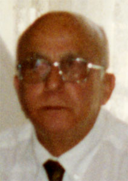

Toribio Martín Cabo
Toribio Martín Cabo  Toribio Martín Cabo
Toribio Martín Cabo 
 Haz clic aquí para detalles de la Familia de Toribio con Francisca Dolores García Cantarero
Haz clic aquí para detalles de la Familia de Toribio con Francisca Dolores García Cantarero
This page is within a frameset. View the entire genealogy report of Martín Cabo families, or surname index of Martín Cabo pedigrees or report summary of Martín Cabo heritage from "Árbol Genealógico de Manolo y Amalia".
Genogram Examples.
© 2006 GenoPro Inc. All Rights Reserved.